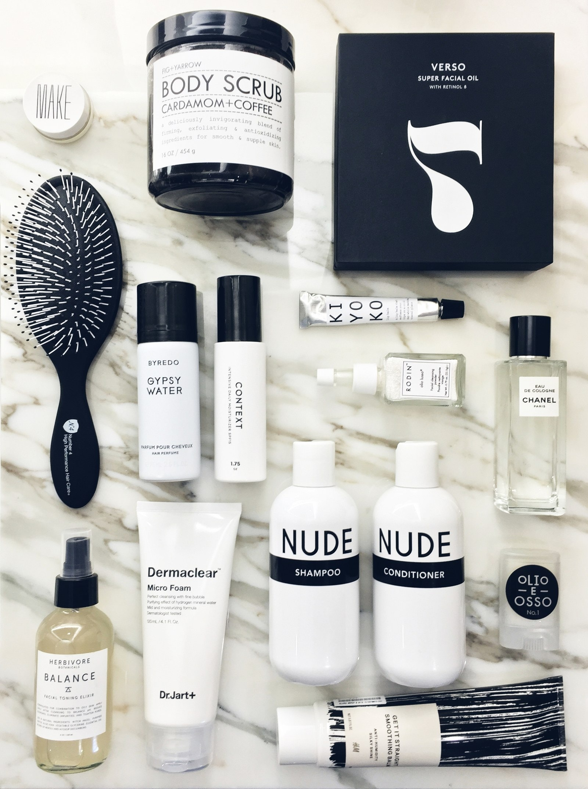

We started Minimalist Beauty back in 2013 because, like you, we’re pretty obsessed with beauty, whether it's testing out the latest K-beauty trend to achieve our #GlassSkinGoals, discussing the best natural beauty products with Zoë Kravitz, or investigating the truth about Olaplex.
Our team of award-winning writers and editors have worked for the biggest publishing houses and beauty companies in the business, including Hearst, Condé Nast, Meredith, and L’Oréal, and is committed to creating an inclusive space that lifts up diverse voices and celebrates the unique beauty found in each of us.
Over the years, we’ve become one of the largest beauty sites on the internet, reaching nearly six million readers a month, according to ComScore, with our library of more than 14,000 pieces of content—and it’s not all lipstick testing and selfie-taking.
No matter your background, skin tone, hair type, or budget, you can come to Minimalist Beauty and feel like you are being seen and represented.
Beauty isn’t one-size-fits-all, but unique to every individual and deeply personal—and we promise to be honest and vulnerable right there with you through our own personal stories. And since it’s as much about how you feel on the inside as it is about what you slather on the outside, you’ll find plenty of expert-backed wellness advice here, too.
So click around. Stay awhile. We hope to make you feel inspired. And if you leave with a new holy-grail product (or two), well—don’t say we didn’t warn you.